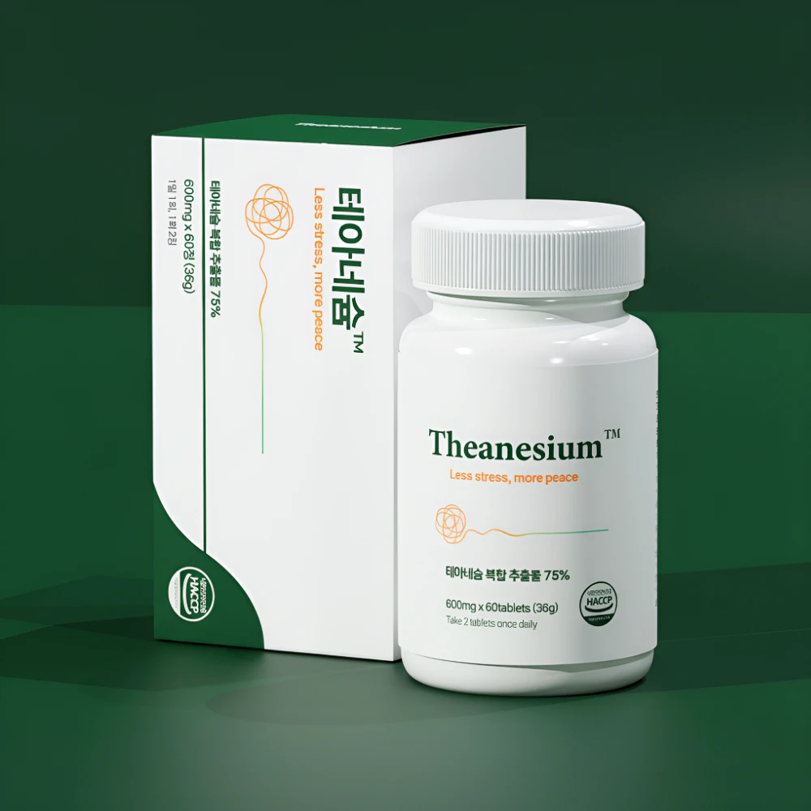

원료와 함량
제품 이름이나 후기보다 1일 섭취량당 성분과 함량을 먼저 확인하세요.
자율신경실조증의 증상과 영양제 선택 기준을 알아보고,
테아네슘의 원료 구성과 판매 정보를 확인하세요.

L-테아닌 · 마그네슘 · GABA · 트립토판 함유
판매처 안내 기준 5가지 첨가물 무첨가
자율신경계는 심박수와 혈압, 소화, 땀 분비 등 몸의 기능을 조절합니다. 자율신경실조증은 이러한 조절에 문제가 생기는 여러 상태를 포괄하는 표현입니다. 불편한 증상만으로 원인을 확정할 수 없으므로, 반복된다면 의료진의 평가를 받는 것이 좋습니다.
제품 이름이나 후기보다 1일 섭취량당 성분과 함량을 먼저 확인하세요.
다른 영양제와 복용약에 같은 성분이 있는지 함께 살펴보세요.
전체 원재료, 섭취 방법과 주의사항, 구매 조건을 확인하세요.
심박수, 혈압, 소화, 땀 분비처럼 의식하지 않아도 이루어지는 기능을 조절하는 자율신경계에 문제가 생긴 상태를 포괄하는 표현입니다. 원인과 양상이 다양하므로 증상만으로 확정하지 않습니다.
영양 보충과 질환 치료는 목적이 다릅니다. 부족한 영양소를 보충하는 것은 도움이 될 수 있지만, 특정 제품이 자율신경실조증을 치료한다는 뜻은 아닙니다. 지속되는 불편은 원인을 먼저 확인하세요.
판매처는 L-테아닌, 마그네슘, GABA, 트립토판 함유를 안내합니다. 각 원료의 정확한 함량과 전체 원재료는 구매할 제품의 표시사항을 확인하세요.